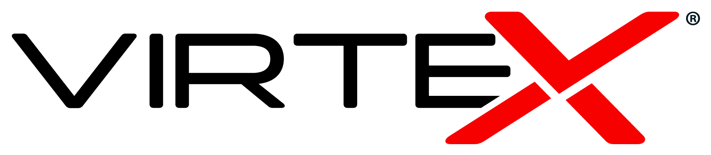

Dimensionamento de Redes
1. Perfil e Criticidade
Palestra / Congresso / Workshop
Feira de Negócios / Stands
Gamer / E-sports (Campeonato)
Show / Festival / Evento de Massa
Transmissão Crítica (Live / TV)
Plataforma da Competição:
Apenas Mobiles (Wi-Fi)
Apenas PCs/Consoles (Cabo)
Ambos (PCs e Mobiles)
Quantidade de PCs/Consoles a cabear:
2. Estimativa de Carga
Público Geral (Celulares):
Staff / Equipe (Notebooks):
Maquininhas de Cartão (POS):
3. Infraestrutura e Barreiras
Ambiente Principal:
Interno (Indoor)
Externo / Área Aberta (Outdoor)
Barreiras Visuais:
Amplo (Vão livre, sem paredes)
Muitas Salas / Divisórias
Obstrução Metálica:
Presença de Food Trucks, tendas de metal ou palcos.
Fixação Alta:
Existe local para instalar os APs acima de 2.5m de altura.
Distância > 100m:
Algum equipamento ficará muito distante do Rack Principal.
4. Fatores Críticos
Transmissão:
Haverá Live ou captação por Imprensa.
4G Ruim:
A internet móvel das operadoras falha no local.
Energia Instável:
Histórico de quedas ou uso de gerador oscilante.
Hotspot:
Cliente exige portal de login (Captura de Leads).
Calcular Projeto